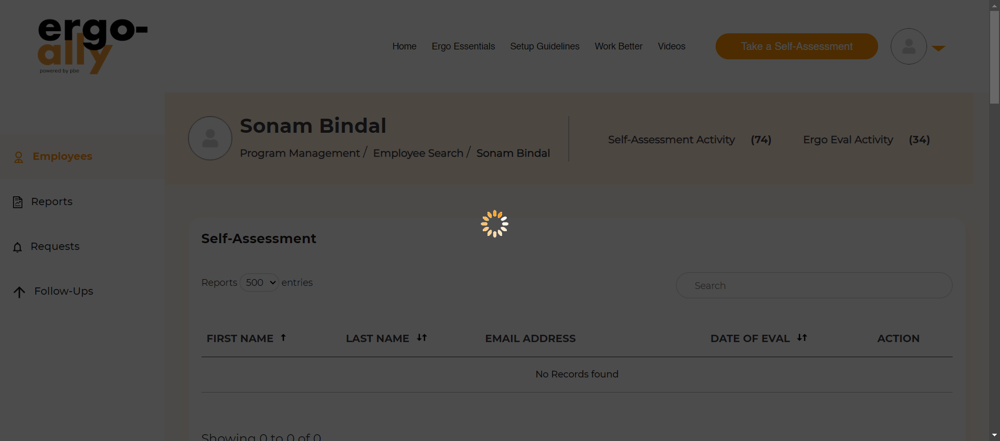
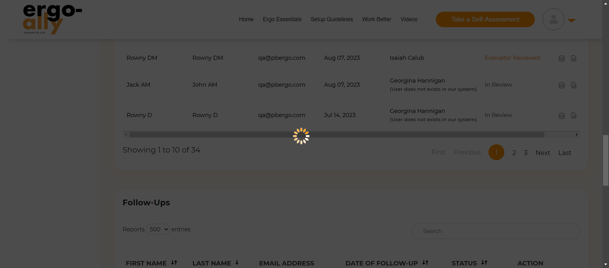

-
com.pbergo.testscripts.ProgramManagementTest: To verify the login functionality.
<<<<<<< HEAD <<<<<<< HEAD 4:25:58 pm / 00:00:00:014 ======= 4:37:23 pm / 00:00:00:011 >>>>>>> 3d0916eb41e25d61fcafabdc62eb1d901efb489e ======= 12:56:57 pm / 00:00:00:045 >>>>>>> 36d799a4e20d7edac3227dd8121359c97316d22a Pass
<<<<<<< HEADcom.pbergo.testscripts.EmployeeSearchTest: To verify the login functionality.
<<<<<<< HEAD 11.06.2024 4:25:58 pm 11.06.2024 4:25:58 pm 00:00:00:014 ======= 11.06.2024 4:37:23 pm 11.06.2024 4:37:23 pm 00:00:00:011 >>>>>>> 3d0916eb41e25d61fcafabdc62eb1d901efb489e =======com.pbergo.testscripts.ProgramManagementTest: To verify the login functionality.
11.09.2024 12:56:57 pm 11.09.2024 12:56:57 pm 00:00:00:045 >>>>>>> 36d799a4e20d7edac3227dd8121359c97316d22a · #test-id=1Status Timestamp Details Pass <<<<<<< HEAD <<<<<<< HEAD4:25:58 pm =======4:37:23 pm >>>>>>> 3d0916eb41e25d61fcafabdc62eb1d901efb489e =======12:56:57 pm >>>>>>> 36d799a4e20d7edac3227dd8121359c97316d22averifyLogin Test Case PASSED -
com.pbergo.testscripts.ProgramManagementTest: This method is used to Open the employee dashboard
<<<<<<< HEAD <<<<<<< HEAD 4:26:02 pm / 00:00:00:002 ======= 4:37:28 pm / 00:00:00:001 >>>>>>> 3d0916eb41e25d61fcafabdc62eb1d901efb489e ======= 12:57:03 pm / 00:00:00:001 >>>>>>> 36d799a4e20d7edac3227dd8121359c97316d22a Pass
<<<<<<< HEADcom.pbergo.testscripts.EmployeeSearchTest: This method is used to Open the employee dashboard
<<<<<<< HEAD 11.06.2024 4:26:02 pm 11.06.2024 4:26:02 pm 00:00:00:002 ======= 11.06.2024 4:37:28 pm 11.06.2024 4:37:28 pm =======com.pbergo.testscripts.ProgramManagementTest: This method is used to Open the employee dashboard
11.09.2024 12:57:03 pm 11.09.2024 12:57:03 pm >>>>>>> 36d799a4e20d7edac3227dd8121359c97316d22a 00:00:00:001 >>>>>>> 3d0916eb41e25d61fcafabdc62eb1d901efb489e · #test-id=2Status Timestamp Details Pass <<<<<<< HEAD <<<<<<< HEAD4:26:02 pm =======4:37:28 pm >>>>>>> 3d0916eb41e25d61fcafabdc62eb1d901efb489e =======12:57:03 pm >>>>>>> 36d799a4e20d7edac3227dd8121359c97316d22averifyopenEmployeeDashboard Test Case PASSED -
com.pbergo.testscripts.ProgramManagementTest: This method is used to open the Program Management dashboard page from left side panel.
<<<<<<< HEAD <<<<<<< HEAD 4:26:38 pm / 00:00:00:000 ======= 4:38:05 pm / 00:00:00:002 >>>>>>> 3d0916eb41e25d61fcafabdc62eb1d901efb489e ======= 12:57:09 pm / 00:00:00:002 >>>>>>> 36d799a4e20d7edac3227dd8121359c97316d22a Pass
<<<<<<< HEADcom.pbergo.testscripts.EmployeeSearchTest: This method is to verify the employee search section in which the filter, tabs, download all button, features are executed.
<<<<<<< HEAD 11.06.2024 4:26:38 pm 11.06.2024 4:26:38 pm 00:00:00:000 ======= 11.06.2024 4:38:05 pm 11.06.2024 4:38:05 pm =======com.pbergo.testscripts.ProgramManagementTest: This method is used to open the Program Management dashboard page from left side panel.
11.09.2024 12:57:09 pm 11.09.2024 12:57:09 pm >>>>>>> 36d799a4e20d7edac3227dd8121359c97316d22a 00:00:00:002 >>>>>>> 3d0916eb41e25d61fcafabdc62eb1d901efb489e · #test-id=3Status Timestamp Details Pass <<<<<<< HEAD <<<<<<< HEAD4:26:38 pm =======4:38:05 pm >>>>>>> 3d0916eb41e25d61fcafabdc62eb1d901efb489e =======12:57:09 pm >>>>>>> 36d799a4e20d7edac3227dd8121359c97316d22averifyOpenProgramManagementDashboard Test Case PASSED -
com.pbergo.testscripts.ProgramManagementTest: This method is used to verify the Client pagination functionality.
<<<<<<< HEAD <<<<<<< HEAD 4:26:49 pm / 00:00:00:001 ======= 4:38:16 pm / 00:00:00:003 >>>>>>> 3d0916eb41e25d61fcafabdc62eb1d901efb489e ======= 12:57:23 pm / 00:00:00:002 >>>>>>> 36d799a4e20d7edac3227dd8121359c97316d22a Pass
<<<<<<< HEADcom.pbergo.testscripts.EmployeeSearchTest: This method is to verify the searching of the employees.
<<<<<<< HEAD 11.06.2024 4:26:49 pm 11.06.2024 4:26:49 pm 00:00:00:001 ======= 11.06.2024 4:38:16 pm 11.06.2024 4:38:16 pm 00:00:00:003 >>>>>>> 3d0916eb41e25d61fcafabdc62eb1d901efb489e =======com.pbergo.testscripts.ProgramManagementTest: This method is used to verify the Client pagination functionality.
11.09.2024 12:57:23 pm 11.09.2024 12:57:23 pm 00:00:00:002 >>>>>>> 36d799a4e20d7edac3227dd8121359c97316d22a · #test-id=4Status Timestamp Details Pass <<<<<<< HEAD <<<<<<< HEAD4:26:49 pm =======4:38:16 pm >>>>>>> 3d0916eb41e25d61fcafabdc62eb1d901efb489e =======12:57:23 pm >>>>>>> 36d799a4e20d7edac3227dd8121359c97316d22averifyClientPaginationFunctionality Test Case PASSED -
com.pbergo.testscripts.ProgramManagementTest: This method is used to verify the Ascending sorting functionality of Client Name.
<<<<<<< HEAD <<<<<<< HEAD 4:27:01 pm / 00:00:00:001 ======= 4:38:28 pm / 00:00:00:002 >>>>>>> 3d0916eb41e25d61fcafabdc62eb1d901efb489e ======= 12:57:36 pm / 00:00:00:002 >>>>>>> 36d799a4e20d7edac3227dd8121359c97316d22a Pass
<<<<<<< HEADcom.pbergo.testscripts.EmployeeSearchTest: This method is to verify the self assessment section in which the searching and downloading the data set action is performed
<<<<<<< HEAD 11.06.2024 4:27:01 pm 11.06.2024 4:27:01 pm 00:00:00:001 ======= 11.06.2024 4:38:28 pm 11.06.2024 4:38:28 pm =======com.pbergo.testscripts.ProgramManagementTest: This method is used to verify the Ascending sorting functionality of Client Name.
11.09.2024 12:57:36 pm 11.09.2024 12:57:36 pm >>>>>>> 36d799a4e20d7edac3227dd8121359c97316d22a 00:00:00:002 >>>>>>> 3d0916eb41e25d61fcafabdc62eb1d901efb489e · #test-id=5Status Timestamp Details Pass <<<<<<< HEAD <<<<<<< HEAD4:27:01 pm =======4:38:28 pm >>>>>>> 3d0916eb41e25d61fcafabdc62eb1d901efb489e =======12:57:36 pm >>>>>>> 36d799a4e20d7edac3227dd8121359c97316d22averifyAscendingOrderSortingFunctionalityOfClienttName Test Case PASSED -
com.pbergo.testscripts.ProgramManagementTest: This method is used to verify the decending sorting functionality of Client Name.
<<<<<<< HEAD <<<<<<< HEAD 4:27:05 pm / 00:00:00:000 ======= 4:38:32 pm / 00:00:00:001 >>>>>>> 3d0916eb41e25d61fcafabdc62eb1d901efb489e ======= 12:58:07 pm / 00:00:00:001 >>>>>>> 36d799a4e20d7edac3227dd8121359c97316d22a Pass
<<<<<<< HEADcom.pbergo.testscripts.EmployeeSearchTest: This method is to verify the click and closing action on the history
<<<<<<< HEAD 11.06.2024 4:27:05 pm 11.06.2024 4:27:05 pm 00:00:00:000 ======= 11.06.2024 4:38:32 pm 11.06.2024 4:38:32 pm =======com.pbergo.testscripts.ProgramManagementTest: This method is used to verify the decending sorting functionality of Client Name.
11.09.2024 12:58:07 pm 11.09.2024 12:58:07 pm >>>>>>> 36d799a4e20d7edac3227dd8121359c97316d22a 00:00:00:001 >>>>>>> 3d0916eb41e25d61fcafabdc62eb1d901efb489e · #test-id=6Status Timestamp Details Pass <<<<<<< HEAD <<<<<<< HEAD4:27:05 pm =======4:38:32 pm >>>>>>> 3d0916eb41e25d61fcafabdc62eb1d901efb489e =======12:58:07 pm >>>>>>> 36d799a4e20d7edac3227dd8121359c97316d22averifyDecendingOrderSortingFunctionalityOfClientName Test Case PASSED -
com.pbergo.testscripts.ProgramManagementTest: This method is used verify the search filter functionality
<<<<<<< HEAD <<<<<<< HEAD 4:27:23 pm / 00:00:00:001 ======= 4:38:50 pm / 00:00:00:001 >>>>>>> 3d0916eb41e25d61fcafabdc62eb1d901efb489e ======= 12:58:14 pm / 00:00:00:003 >>>>>>> 36d799a4e20d7edac3227dd8121359c97316d22a Pass
<<<<<<< HEADcom.pbergo.testscripts.EmployeeSearchTest: This method is to verify the ergo eval section in which the searching and downloading the data set action is performed
<<<<<<< HEAD 11.06.2024 4:27:23 pm 11.06.2024 4:27:23 pm ======= 11.06.2024 4:38:50 pm 11.06.2024 4:38:50 pm >>>>>>> 3d0916eb41e25d61fcafabdc62eb1d901efb489e 00:00:00:001 =======com.pbergo.testscripts.ProgramManagementTest: This method is used verify the search filter functionality
11.09.2024 12:58:14 pm 11.09.2024 12:58:14 pm 00:00:00:003 >>>>>>> 36d799a4e20d7edac3227dd8121359c97316d22a · #test-id=7Status Timestamp Details Pass <<<<<<< HEAD <<<<<<< HEAD4:27:23 pm =======4:38:50 pm >>>>>>> 3d0916eb41e25d61fcafabdc62eb1d901efb489e =======12:58:14 pm >>>>>>> 36d799a4e20d7edac3227dd8121359c97316d22averifySearchFunctionality Test Case PASSED -
com.pbergo.testscripts.ProgramManagementTest: This method is used verify the client view button functionality
<<<<<<< HEAD <<<<<<< HEAD 4:27:40 pm / 00:00:00:001 ======= 4:39:07 pm / 00:00:00:005 >>>>>>> 3d0916eb41e25d61fcafabdc62eb1d901efb489e ======= 12:58:23 pm / 00:00:00:002 >>>>>>> 36d799a4e20d7edac3227dd8121359c97316d22a Pass
<<<<<<< HEADcom.pbergo.testscripts.EmployeeSearchTest: This method is to verify the follow ups section in which the searching and downloading the data set action is performed
<<<<<<< HEAD 11.06.2024 4:27:40 pm 11.06.2024 4:27:40 pm 00:00:00:001 ======= 11.06.2024 4:39:07 pm 11.06.2024 4:39:07 pm 00:00:00:005 >>>>>>> 3d0916eb41e25d61fcafabdc62eb1d901efb489e =======com.pbergo.testscripts.ProgramManagementTest: This method is used verify the client view button functionality
11.09.2024 12:58:23 pm 11.09.2024 12:58:23 pm 00:00:00:002 >>>>>>> 36d799a4e20d7edac3227dd8121359c97316d22a · #test-id=8Status Timestamp Details Pass <<<<<<< HEAD <<<<<<< HEAD4:27:40 pm followupssearch Test Case PASSED ======= 4:39:07 pm =======12:58:23 pm >>>>>>> 36d799a4e20d7edac3227dd8121359c97316d22averifyClientViewBtnFunctionality Test Case PASSED -
com.pbergo.testscripts.ProgramManagementTest: This method is used to verify the Ascending sorting functionality of First Name.
12:58:54 pm / 00:00:01:076 Fail
com.pbergo.testscripts.ProgramManagementTest: This method is used to verify the Ascending sorting functionality of First Name.
11.09.2024 12:58:54 pm 11.09.2024 12:58:55 pm 00:00:01:076 · #test-id=9Status Timestamp Details Fail 12:58:55 pm verifyAscendingOrderSortingFunctionalityOfFirstName Failed case screenshot taken Fail 12:58:55 pm verifyAscendingOrderSortingFunctionalityOfFirstName Test case FAILED due to below issues: Fail 12:58:55 pm >>>>>>> 3d0916eb41e25d61fcafabdc62eb1d901efb489e -
com.pbergo.testscripts.EmployeeSearchTest: This method is to verify the click and closing action on the history.
<<<<<<< HEAD <<<<<<< HEAD 4:27:45 pm / 00:00:00:000 ======= 4:46:57 pm / 00:00:00:000 >>>>>>> 3d0916eb41e25d61fcafabdc62eb1d901efb489e ======= 12:59:26 pm / 00:00:00:003 >>>>>>> 36d799a4e20d7edac3227dd8121359c97316d22a Pass
<<<<<<< HEADcom.pbergo.testscripts.EmployeeSearchTest: This method is to verify the click and closing action on the history.
11.06.2024 4:27:45 pm 11.06.2024 4:27:45 pm 00:00:00:000 · #test-id=9 =======com.pbergo.testscripts.ProgramManagementTest: This method is used to verify the decending sorting functionality of First Name.
<<<<<<< HEAD 11.06.2024 4:46:57 pm 11.06.2024 4:46:57 pm 00:00:00:000 · #test-id=30 >>>>>>> 3d0916eb41e25d61fcafabdc62eb1d901efb489e ======= 11.09.2024 12:59:26 pm 11.09.2024 12:59:26 pm 00:00:00:003 · #test-id=10 >>>>>>> 36d799a4e20d7edac3227dd8121359c97316d22aStatus Timestamp Details Pass <<<<<<< HEAD <<<<<<< HEAD4:27:45 pm =======4:46:57 pm >>>>>>> 3d0916eb41e25d61fcafabdc62eb1d901efb489e =======12:59:26 pm >>>>>>> 36d799a4e20d7edac3227dd8121359c97316d22afollowupshistory Test Case PASSED
<<<<<<< HEAD
<<<<<<< HEAD
- >>>>>> 3d0916eb41e25d61fcafabdc62eb1d901efb489e =======
- >>>>>> 36d799a4e20d7edac3227dd8121359c97316d22a
author=""
tag=""
device="">
com.pbergo.testscripts.EmployeeSearchTest: This method is to verify the schedule request form section in which the searching and downloading the data set action is performed
<<<<<<< HEAD <<<<<<< HEAD 4:28:03 pm / 00:00:00:001 Pass ======= 4:47:27 pm / 00:00:00:941 ======= 12:59:56 pm / 00:00:01:019 >>>>>>> 36d799a4e20d7edac3227dd8121359c97316d22a Fail >>>>>>> 3d0916eb41e25d61fcafabdc62eb1d901efb489e
<<<<<<< HEADcom.pbergo.testscripts.EmployeeSearchTest: This method is to verify the schedule request form section in which the searching and downloading the data set action is performed
11.06.2024 4:28:03 pm 11.06.2024 4:28:03 pm 00:00:00:001 · #test-id=10 =======com.pbergo.testscripts.ProgramManagementTest: This method is used to verify the Ascending sorting functionality of Last Name.
<<<<<<< HEAD 11.06.2024 4:47:27 pm 11.06.2024 4:47:28 pm 00:00:00:941 · #test-id=31 >>>>>>> 3d0916eb41e25d61fcafabdc62eb1d901efb489e ======= 11.09.2024 12:59:56 pm 11.09.2024 12:59:57 pm 00:00:01:019 · #test-id=11 >>>>>>> 36d799a4e20d7edac3227dd8121359c97316d22aStatus Timestamp Details <<<<<<< HEAD Pass 4:28:03 pm schedulerequestformsearch Test Case PASSED ======= Fail 12:59:57 pm verifyAscendingOrderSortingFunctionalityOfLastName Failed case screenshot taken Fail 12:59:57 pm verifyAscendingOrderSortingFunctionalityOfLastName Test case FAILED due to below issues: Fail 12:59:57 pm -
com.pbergo.testscripts.ProgramManagementTest: This method is used to verify the decending sorting functionality of Last Name.
1:00:28 pm / 00:00:00:000 Pass
com.pbergo.testscripts.ProgramManagementTest: This method is used to verify the decending sorting functionality of Last Name.
11.09.2024 1:00:28 pm 11.09.2024 1:00:28 pm 00:00:00:000 · #test-id=12Status Timestamp Details Pass 1:00:28 pm verifyDecendingOrderSortingFunctionalityOfLastName Test Case PASSED >>>>>>> 3d0916eb41e25d61fcafabdc62eb1d901efb489e
<<<<<<< HEAD
<<<<<<< HEAD
- >>>>>> 3d0916eb41e25d61fcafabdc62eb1d901efb489e =======
- >>>>>> 36d799a4e20d7edac3227dd8121359c97316d22a
author=""
tag=""
device="">
com.pbergo.testscripts.EmployeeSearchTest: This method is to verify the click and closing action on the history.
<<<<<<< HEAD <<<<<<< HEAD 4:28:07 pm / 00:00:00:002 Pass ======= 4:48:27 pm / 00:00:00:918 ======= 1:00:59 pm / 00:00:01:090 >>>>>>> 36d799a4e20d7edac3227dd8121359c97316d22a Fail >>>>>>> 3d0916eb41e25d61fcafabdc62eb1d901efb489e
<<<<<<< HEADcom.pbergo.testscripts.EmployeeSearchTest: This method is to verify the click and closing action on the history.
11.06.2024 4:28:07 pm 11.06.2024 4:28:07 pm 00:00:00:002 · #test-id=11 =======com.pbergo.testscripts.ProgramManagementTest: This method is used to verify the Ascending sorting functionality of EmailAddress.
<<<<<<< HEAD 11.06.2024 4:48:27 pm 11.06.2024 4:48:28 pm 00:00:00:918 · #test-id=33 >>>>>>> 3d0916eb41e25d61fcafabdc62eb1d901efb489e ======= 11.09.2024 1:00:59 pm 11.09.2024 1:01:00 pm 00:00:01:090 · #test-id=13 >>>>>>> 36d799a4e20d7edac3227dd8121359c97316d22aStatus Timestamp Details <<<<<<< HEAD Pass 4:28:07 pm schedulerequestformhistory Test Case PASSED ======= Fail 1:01:00 pm verifyAscendingOrderSortingFunctionalityOfEmailAddress Failed case screenshot taken Fail 1:01:00 pm verifyAscendingOrderSortingFunctionalityOfEmailAddress Test case FAILED due to below issues: Fail 1:01:00 pm >>>>>>> 3d0916eb41e25d61fcafabdc62eb1d901efb489e
<<<<<<< HEAD
<<<<<<< HEAD
- >>>>>> 3d0916eb41e25d61fcafabdc62eb1d901efb489e =======
- >>>>>> 36d799a4e20d7edac3227dd8121359c97316d22a
author=""
tag=""
device="">
com.pbergo.testscripts.EmployeeSearchTest: This method is used to verify the pagination functionality.
<<<<<<< HEAD <<<<<<< HEAD 4:28:28 pm / 00:00:00:000 Pass ======= 4:48:57 pm / 00:00:00:908 ======= 1:01:30 pm / 00:00:00:952 >>>>>>> 36d799a4e20d7edac3227dd8121359c97316d22a Fail >>>>>>> 3d0916eb41e25d61fcafabdc62eb1d901efb489e
<<<<<<< HEADcom.pbergo.testscripts.EmployeeSearchTest: This method is used to verify the pagination functionality.
11.06.2024 4:28:28 pm 11.06.2024 4:28:28 pm 00:00:00:000 · #test-id=12 =======com.pbergo.testscripts.ProgramManagementTest: This method is used to verify the decending sorting functionality of EmailAddress.
<<<<<<< HEAD 11.06.2024 4:48:57 pm 11.06.2024 4:48:58 pm 00:00:00:908 · #test-id=34 >>>>>>> 3d0916eb41e25d61fcafabdc62eb1d901efb489e ======= 11.09.2024 1:01:30 pm 11.09.2024 1:01:31 pm 00:00:00:952 · #test-id=14 >>>>>>> 36d799a4e20d7edac3227dd8121359c97316d22aStatus Timestamp Details <<<<<<< HEAD Pass 4:28:28 pm verifyPaginationFunctionality Test Case PASSED ======= Fail 1:01:31 pm verifyDecendingOrderSortingFunctionalityOfEmailAddress Failed case screenshot taken Fail 1:01:31 pm verifyDecendingOrderSortingFunctionalityOfEmailAddress Test case FAILED due to below issues: Fail 1:01:31 pm >>>>>>> 3d0916eb41e25d61fcafabdc62eb1d901efb489e -
com.pbergo.testscripts.EmployeeSearchTest: This method is used to verify the Ascending sorting functionality of First Name.
<<<<<<< HEAD <<<<<<< HEAD 4:29:03 pm / 00:00:00:972 ======= 4:49:28 pm / 00:00:00:929 >>>>>>> 3d0916eb41e25d61fcafabdc62eb1d901efb489e ======= 1:02:02 pm / 00:00:00:994 >>>>>>> 36d799a4e20d7edac3227dd8121359c97316d22a Fail
<<<<<<< HEADcom.pbergo.testscripts.EmployeeSearchTest: This method is used to verify the Ascending sorting functionality of First Name.
11.06.2024 4:29:03 pm 11.06.2024 4:29:04 pm 00:00:00:972 · #test-id=13 =======com.pbergo.testscripts.ProgramManagementTest: This method is used to verify the Ascending sorting functionality of Region.
<<<<<<< HEAD 11.06.2024 4:49:28 pm 11.06.2024 4:49:29 pm 00:00:00:929 · #test-id=35 >>>>>>> 3d0916eb41e25d61fcafabdc62eb1d901efb489e ======= 11.09.2024 1:02:02 pm 11.09.2024 1:02:03 pm 00:00:00:994 · #test-id=15 >>>>>>> 36d799a4e20d7edac3227dd8121359c97316d22aStatus Timestamp Details Fail <<<<<<< HEAD <<<<<<< HEAD4:29:04 pm =======4:49:29 pm >>>>>>> 3d0916eb41e25d61fcafabdc62eb1d901efb489e =======1:02:03 pm >>>>>>> 36d799a4e20d7edac3227dd8121359c97316d22averifyAscendingOrderSortingFunctionalityOfFirstName Failed case screenshot taken <<<<<<< HEAD <<<<<<< HEAD ======= >>>>>>> 3d0916eb41e25d61fcafabdc62eb1d901efb489e ======= >>>>>>> 36d799a4e20d7edac3227dd8121359c97316d22aFail <<<<<<< HEAD <<<<<<< HEAD4:29:04 pm =======4:49:29 pm >>>>>>> 3d0916eb41e25d61fcafabdc62eb1d901efb489e =======1:02:03 pm >>>>>>> 36d799a4e20d7edac3227dd8121359c97316d22averifyAscendingOrderSortingFunctionalityOfFirstName Test case FAILED due to below issues: Fail <<<<<<< HEAD <<<<<<< HEAD4:29:04 pm =======4:49:29 pm >>>>>>> 3d0916eb41e25d61fcafabdc62eb1d901efb489e =======1:02:03 pm >>>>>>> 36d799a4e20d7edac3227dd8121359c97316d22a -
com.pbergo.testscripts.EmployeeSearchTest: This method is used to verify the decending sorting functionality of First Name.
<<<<<<< HEAD <<<<<<< HEAD 4:29:33 pm / 00:00:00:000 Pass ======= 4:49:58 pm / 00:00:18:574 Fail >>>>>>> 3d0916eb41e25d61fcafabdc62eb1d901efb489e
<<<<<<< HEADcom.pbergo.testscripts.EmployeeSearchTest: This method is used to verify the decending sorting functionality of First Name.
11.06.2024 4:29:33 pm 11.06.2024 4:29:33 pm 00:00:00:000 · #test-id=14 =======com.pbergo.testscripts.ProgramManagementTest: This method is used to verify the decending sorting functionality of Region.
11.06.2024 4:49:58 pm 11.06.2024 4:50:17 pm 00:00:18:574 · #test-id=36 >>>>>>> 3d0916eb41e25d61fcafabdc62eb1d901efb489eStatus Timestamp Details <<<<<<< HEAD Pass 4:29:33 pm verifyDecendingOrderSortingFunctionalityOfFirstName Test Case PASSED ======= Fail 4:49:59 pm verifyDecendingOrderSortingFunctionalityOfRegion Failed case screenshot taken Fail 4:49:59 pm verifyDecendingOrderSortingFunctionalityOfRegion Test case FAILED due to below issues: Fail 4:49:59 pm Fail 4:50:17 pm verifyprogramsearch Failed case screenshot taken 
Fail 4:50:17 pm verifyprogramsearch Test case FAILED due to below issues: Fail 4:50:17 pm >>>>>>> 3d0916eb41e25d61fcafabdc62eb1d901efb489e
<<<<<<< HEAD
- >>>>>> 3d0916eb41e25d61fcafabdc62eb1d901efb489e
author=""
tag=""
device="">
<<<<<<< HEAD
com.pbergo.testscripts.EmployeeSearchTest: This method is used to verify the Ascending sorting functionality of Last Name.
4:30:03 pm / 00:00:00:938 Fail =======
com.pbergo.testscripts.ProgramManagementTest: This method is used to verify the Client pagination functionality.
4:50:30 pm / 00:00:00:001 ======= 1:02:33 pm / 00:00:00:001 >>>>>>> 36d799a4e20d7edac3227dd8121359c97316d22a Pass >>>>>>> 3d0916eb41e25d61fcafabdc62eb1d901efb489e
<<<<<<< HEAD <<<<<<< HEADcom.pbergo.testscripts.EmployeeSearchTest: This method is used to verify the Ascending sorting functionality of Last Name.
11.06.2024 4:30:03 pm 11.06.2024 4:30:04 pm 00:00:00:938 · #test-id=15 =======com.pbergo.testscripts.ProgramManagementTest: This method is used to verify the Client pagination functionality.
11.06.2024 4:50:30 pm 11.06.2024 4:50:30 pm 00:00:00:001 · #test-id=37 >>>>>>> 3d0916eb41e25d61fcafabdc62eb1d901efb489e =======com.pbergo.testscripts.ProgramManagementTest: This method is used to verify the decending sorting functionality of Region.
11.09.2024 1:02:33 pm 11.09.2024 1:02:33 pm 00:00:00:001 · #test-id=16 >>>>>>> 36d799a4e20d7edac3227dd8121359c97316d22aStatus Timestamp Details <<<<<<< HEAD Fail 4:30:04 pm verifyAscendingOrderSortingFunctionalityOfLastName Failed case screenshot taken Fail 4:30:04 pm verifyAscendingOrderSortingFunctionalityOfLastName Test case FAILED due to below issues: Fail 4:30:04 pm ======= Pass 1:02:33 pm verifyDecendingOrderSortingFunctionalityOfRegion Test Case PASSED -
com.pbergo.testscripts.ProgramManagementTestThis method is used to verify the program search
1:02:52 pm / 00:00:00:003 Pass
com.pbergo.testscripts.ProgramManagementTestThis method is used to verify the program search
11.09.2024 1:02:52 pm 11.09.2024 1:02:52 pm 00:00:00:003 · #test-id=17Status Timestamp Details Pass 1:02:52 pm verifyprogramsearch Test Case PASSED -
com.pbergo.testscripts.ProgramManagementTest: This method is used to verify the Client pagination functionality.
1:03:39 pm / 00:00:00:002 Pass
com.pbergo.testscripts.ProgramManagementTest: This method is used to verify the Client pagination functionality.
11.09.2024 1:03:39 pm 11.09.2024 1:03:39 pm 00:00:00:002 · #test-id=18Status Timestamp Details Pass 1:03:39 pm verifyClientPaginationFunctionalitySA Test Case PASSED >>>>>>> 3d0916eb41e25d61fcafabdc62eb1d901efb489e -
com.pbergo.testscripts.EmployeeSearchTest: This method is used to verify the decending sorting functionality of Last Name.
<<<<<<< HEAD <<<<<<< HEAD 4:30:33 pm / 00:00:00:001 ======= 4:51:07 pm / 00:00:00:001 >>>>>>> 3d0916eb41e25d61fcafabdc62eb1d901efb489e Pass
<<<<<<< HEADcom.pbergo.testscripts.EmployeeSearchTest: This method is used to verify the decending sorting functionality of Last Name.
11.06.2024 4:30:33 pm 11.06.2024 4:30:33 pm 00:00:00:001 · #test-id=16 =======com.pbergo.testscripts.ProgramManagementTest: This method is used to verify the Ascending sorting functionality of Last Name.
11.06.2024 4:51:07 pm 11.06.2024 4:51:07 pm 00:00:00:001 · #test-id=38 >>>>>>> 3d0916eb41e25d61fcafabdc62eb1d901efb489eStatus Timestamp Details Pass <<<<<<< HEAD4:30:33 pm =======4:51:07 pm >>>>>>> 3d0916eb41e25d61fcafabdc62eb1d901efb489everifyDecendingOrderSortingFunctionalityOfLastName Test Case PASSED
<<<<<<< HEAD
- >>>>>> 3d0916eb41e25d61fcafabdc62eb1d901efb489e
author=""
tag=""
device="">
com.pbergo.testscripts.EmployeeSearchTest: This method is used to verify the Ascending sorting functionality of EmailAddress.
<<<<<<< HEAD 4:31:03 pm / 00:00:00:919 Fail ======= 4:51:37 pm / 00:00:00:001 Pass >>>>>>> 3d0916eb41e25d61fcafabdc62eb1d901efb489e
<<<<<<< HEADcom.pbergo.testscripts.EmployeeSearchTest: This method is used to verify the Ascending sorting functionality of EmailAddress.
11.06.2024 4:31:03 pm 11.06.2024 4:31:03 pm 00:00:00:919 · #test-id=17 =======com.pbergo.testscripts.ProgramManagementTest: This method is used to verify the decending sorting functionality of First Name.
11.06.2024 4:51:37 pm 11.06.2024 4:51:37 pm 00:00:00:001 · #test-id=39 >>>>>>> 3d0916eb41e25d61fcafabdc62eb1d901efb489eStatus Timestamp Details <<<<<<< HEAD Fail 4:31:03 pm =======Pass 4:51:37 pm >>>>>>> 3d0916eb41e25d61fcafabdc62eb1d901efb489everifyAscendingOrderSortingFunctionalityOfEmailAddress Failed case screenshot taken Fail 4:31:03 pm verifyAscendingOrderSortingFunctionalityOfEmailAddress Test case FAILED due to below issues: Fail 4:31:03 pm -
com.pbergo.testscripts.EmployeeSearchTest: This method is used to verify the decending sorting functionality of EmailAddress.
<<<<<<< HEAD 4:31:33 pm / 00:00:00:932 ======= 4:52:07 pm / 00:00:23:568 >>>>>>> 3d0916eb41e25d61fcafabdc62eb1d901efb489e ======= 1:05:14 pm / 00:00:15:203 >>>>>>> 36d799a4e20d7edac3227dd8121359c97316d22a Fail
<<<<<<< HEADcom.pbergo.testscripts.EmployeeSearchTest: This method is used to verify the decending sorting functionality of EmailAddress.
11.06.2024 4:31:33 pm 11.06.2024 4:31:34 pm 00:00:00:932 · #test-id=18Status Timestamp Details Fail 4:31:34 pm verifyDecendingOrderSortingFunctionalityOfEmailAddress Failed case screenshot taken Fail 4:31:34 pm verifyDecendingOrderSortingFunctionalityOfEmailAddress Test case FAILED due to below issues: Fail 4:31:34 pm -
com.pbergo.testscripts.EmployeeSearchTest: This method is used to verify the Ascending sorting functionality of Region.
4:32:03 pm / 00:00:00:928 Fail
com.pbergo.testscripts.EmployeeSearchTest: This method is used to verify the Ascending sorting functionality of Region.
11.06.2024 4:32:03 pm 11.06.2024 4:32:04 pm 00:00:00:928 · #test-id=19Status Timestamp Details Fail 4:32:04 pm verifyAscendingOrderSortingFunctionalityOfRegion Failed case screenshot taken Fail 4:32:04 pm verifyAscendingOrderSortingFunctionalityOfRegion Test case FAILED due to below issues: Fail 4:32:04 pm -
com.pbergo.testscripts.EmployeeSearchTest: This method is used to verify the decending sorting functionality of Region.
4:32:34 pm / 00:00:00:001 Pass
com.pbergo.testscripts.EmployeeSearchTest: This method is used to verify the decending sorting functionality of Region.
11.06.2024 4:32:34 pm 11.06.2024 4:32:34 pm 00:00:00:001 · #test-id=20 =======com.pbergo.testscripts.ProgramManagementTest: This method is used to verify the Ascending sorting functionality of Last Name.
<<<<<<< HEAD 11.06.2024 4:52:07 pm 11.06.2024 4:52:31 pm 00:00:23:568 · #test-id=40 >>>>>>> 3d0916eb41e25d61fcafabdc62eb1d901efb489e ======= 11.09.2024 1:05:14 pm 11.09.2024 1:05:29 pm 00:00:15:203 · #test-id=19 >>>>>>> 36d799a4e20d7edac3227dd8121359c97316d22aStatus Timestamp Details Pass <<<<<<< HEAD <<<<<<< HEAD4:32:34 pm =======4:52:07 pm =======1:05:14 pm >>>>>>> 36d799a4e20d7edac3227dd8121359c97316d22averifyAscendingOrderSortingFunctionalityOfFirstNameSA Test Case PASSED Fail 1:05:29 pm verifyDecendingOrderSortingFunctionalityOfFirstNameSA Failed case screenshot taken Fail 1:05:29 pm verifyDecendingOrderSortingFunctionalityOfFirstNameSA Test case FAILED due to below issues: Fail 1:05:29 pm -
com.pbergo.testscripts.ProgramManagementTest: This method is used to verify the Ascending sorting functionality of Last Name.
1:05:36 pm / 00:00:00:003 Pass
com.pbergo.testscripts.ProgramManagementTest: This method is used to verify the Ascending sorting functionality of Last Name.
11.09.2024 1:05:36 pm 11.09.2024 1:05:36 pm 00:00:00:003 · #test-id=20Status Timestamp Details Pass <<<<<<< HEAD4:53:01 pm >>>>>>> 3d0916eb41e25d61fcafabdc62eb1d901efb489e =======1:05:36 pm verifyAscendingOrderSortingFunctionalityOfLastNameSA Test Case PASSED -
com.pbergo.testscripts.ProgramManagementTest: This method is used to verify the decending sorting functionality of Last Name.
1:05:43 pm / 00:00:00:004 Pass
com.pbergo.testscripts.ProgramManagementTest: This method is used to verify the decending sorting functionality of Last Name.
11.09.2024 1:05:43 pm 11.09.2024 1:05:43 pm 00:00:00:004 · #test-id=21Status Timestamp Details Pass 1:05:43 pm verifyDecendingOrderSortingFunctionalityOfLastNameSA Test Case PASSED -
com.pbergo.testscripts.ProgramManagementTest: This method is used to verify the Ascending sorting functionality of EmailAddress.
1:05:50 pm / 00:00:00:003 Pass
com.pbergo.testscripts.ProgramManagementTest: This method is used to verify the Ascending sorting functionality of EmailAddress.
11.09.2024 1:05:50 pm 11.09.2024 1:05:50 pm 00:00:00:003 · #test-id=22Status Timestamp Details Pass 1:05:50 pm >>>>>>> 36d799a4e20d7edac3227dd8121359c97316d22averifyDecendingOrderSortingFunctionalityOfRegion Test Case PASSED
<<<<<<< HEAD
<<<<<<< HEAD
- >>>>>> 3d0916eb41e25d61fcafabdc62eb1d901efb489e =======
- >>>>>> 36d799a4e20d7edac3227dd8121359c97316d22a
author=""
tag=""
device="">
com.pbergo.testscripts.HelpCenterTest: To verify the login functionality.
<<<<<<< HEAD <<<<<<< HEAD 4:32:49 pm / 00:00:00:001 ======= 4:53:31 pm / 00:00:00:000 >>>>>>> 3d0916eb41e25d61fcafabdc62eb1d901efb489e ======= 1:05:57 pm / 00:00:00:003 >>>>>>> 36d799a4e20d7edac3227dd8121359c97316d22a Pass
<<<<<<< HEADcom.pbergo.testscripts.HelpCenterTest: To verify the login functionality.
11.06.2024 4:32:49 pm 11.06.2024 4:32:49 pm 00:00:00:001 · #test-id=21 =======com.pbergo.testscripts.ProgramManagementTest: This method is used to verify the decending sorting functionality of EmailAddress.
<<<<<<< HEAD 11.06.2024 4:53:31 pm 11.06.2024 4:53:31 pm 00:00:00:000 · #test-id=42 >>>>>>> 3d0916eb41e25d61fcafabdc62eb1d901efb489e ======= 11.09.2024 1:05:57 pm 11.09.2024 1:05:57 pm 00:00:00:003 · #test-id=23 >>>>>>> 36d799a4e20d7edac3227dd8121359c97316d22aStatus Timestamp Details Pass <<<<<<< HEAD <<<<<<< HEAD4:32:49 pm verifyLogin Test Case PASSED ======= 4:53:31 pm =======1:05:57 pm >>>>>>> 36d799a4e20d7edac3227dd8121359c97316d22averifyDecendingOrderSortingFunctionalityOfDOESA Test Case PASSED -
com.pbergo.testscripts.ProgramManagementTest: This method is used to verify the Client pagination functionality.
1:07:12 pm / 00:02:49:459 Fail
com.pbergo.testscripts.ProgramManagementTest: This method is used to verify the Client pagination functionality.
11.09.2024 1:07:12 pm 11.09.2024 1:10:01 pm 00:02:49:459 · #test-id=24Status Timestamp Details Pass 1:07:12 pm verifyClientPaginationFunctionalityEE Test Case PASSED Fail 1:07:34 pm verifyAscendingOrderSortingFunctionalityOfFirstNameEE Failed case screenshot taken Fail 1:07:34 pm verifyAscendingOrderSortingFunctionalityOfFirstNameEE Test case FAILED due to below issues: Fail 1:07:34 pm Fail 1:07:50 pm verifyDecendingOrderSortingFunctionalityOfFirstNameEE Failed case screenshot taken Fail 1:07:50 pm verifyDecendingOrderSortingFunctionalityOfFirstNameEE Test case FAILED due to below issues: Fail 1:07:50 pm >>>>>>> 3d0916eb41e25d61fcafabdc62eb1d901efb489e
<<<<<<< HEAD
- >>>>>> 3d0916eb41e25d61fcafabdc62eb1d901efb489e
author=""
tag=""
device="">
com.pbergo.testscripts.HelpCenterTest: This method is used to Open the employee dashboard
<<<<<<< HEAD 4:32:53 pm / 00:00:00:000 ======= 4:55:00 pm / 00:00:00:000 >>>>>>> 3d0916eb41e25d61fcafabdc62eb1d901efb489e Pass
<<<<<<< HEADcom.pbergo.testscripts.HelpCenterTest: This method is used to Open the employee dashboard
11.06.2024 4:32:53 pm 11.06.2024 4:32:53 pm 00:00:00:000 · #test-id=22 =======com.pbergo.testscripts.ProgramManagementTest: This method is used to verify the Ascending sorting functionality of Last Name.
11.06.2024 4:55:00 pm 11.06.2024 4:55:00 pm 00:00:00:000 · #test-id=44 >>>>>>> 3d0916eb41e25d61fcafabdc62eb1d901efb489eStatus Timestamp Details Pass <<<<<<< HEAD4:32:53 pm verifyopenEmployeeDashboard Test Case PASSED ======= 4:55:00 pm verifyAscendingOrderSortingFunctionalityOfLastNameEE Test Case PASSED >>>>>>> 3d0916eb41e25d61fcafabdc62eb1d901efb489e
<<<<<<< HEAD
- >>>>>> 3d0916eb41e25d61fcafabdc62eb1d901efb489e
author=""
tag=""
device="">
com.pbergo.testscripts.HelpCenterTest: This method is used to verify the recommended Video play pause functionality from the my reports dashboard
<<<<<<< HEAD 4:33:19 pm / 00:00:00:001 Pass ======= 4:55:30 pm / 00:00:44:740 Fail >>>>>>> 3d0916eb41e25d61fcafabdc62eb1d901efb489e
<<<<<<< HEADcom.pbergo.testscripts.HelpCenterTest: This method is used to verify the recommended Video play pause functionality from the my reports dashboard
11.06.2024 4:33:19 pm 11.06.2024 4:33:19 pm 00:00:00:001 · #test-id=23 =======com.pbergo.testscripts.ProgramManagementTest: This method is used to verify the decending sorting functionality of Last Name.
11.06.2024 4:55:30 pm 11.06.2024 4:56:15 pm 00:00:44:740 · #test-id=45 >>>>>>> 3d0916eb41e25d61fcafabdc62eb1d901efb489eStatus Timestamp Details <<<<<<< HEAD =======Pass 4:33:19 pm MyReports Test Case PASSED Fail 1:08:06 pm verifyAscendingOrderSortingFunctionalityOfLastNameEE Failed case screenshot taken Fail 1:08:06 pm verifyAscendingOrderSortingFunctionalityOfLastNameEE Test case FAILED due to below issues: Fail 1:08:06 pm Fail 1:08:21 pm verifyDecendingOrderSortingFunctionalityOfLastNameEE Failed case screenshot taken Fail 1:08:21 pm verifyDecendingOrderSortingFunctionalityOfLastNameEE Test case FAILED due to below issues: Fail 1:08:21 pm Fail 1:08:43 pm verifyAscendingOrderSortingFunctionalityOfDOEEE Failed case screenshot taken Fail 1:08:43 pm verifyAscendingOrderSortingFunctionalityOfDOEEE Test case FAILED due to below issues: Fail 1:08:43 pm Fail 1:08:56 pm verifyDecendingOrderSortingFunctionalityOfDOEEE Failed case screenshot taken Fail 1:08:56 pm verifyDecendingOrderSortingFunctionalityOfDOEEE Test case FAILED due to below issues: Fail 1:08:56 pm
<<<<<<< HEAD
- >>>>>> 3d0916eb41e25d61fcafabdc62eb1d901efb489e
author=""
tag=""
device="">
<<<<<<< HEAD
com.pbergo.testscripts.HelpCenterTest: This method is used to verify the recommended Video play pause functionality from the my data dashboard
4:34:30 pm / 00:00:00:001 Pass =======
com.pbergo.testscripts.ProgramManagementTest: This method is used to verify the Ascending sorting functionality of EmailAddress.
4:56:45 pm / 00:00:00:930 Fail >>>>>>> 3d0916eb41e25d61fcafabdc62eb1d901efb489e
<<<<<<< HEADcom.pbergo.testscripts.HelpCenterTest: This method is used to verify the recommended Video play pause functionality from the my data dashboard
11.06.2024 4:34:30 pm 11.06.2024 4:34:30 pm 00:00:00:001 · #test-id=24 =======com.pbergo.testscripts.ProgramManagementTest: This method is used to verify the Ascending sorting functionality of EmailAddress.
11.06.2024 4:56:45 pm 11.06.2024 4:56:46 pm 00:00:00:930 · #test-id=46Status Timestamp Details Fail 1:09:12 pm verifyAscendingOrderSortingFunctionalityOfEvaluatorEE Failed case screenshot taken Fail 1:09:12 pm verifyAscendingOrderSortingFunctionalityOfEvaluatorEE Test case FAILED due to below issues: Fail 1:09:12 pm Fail 1:09:29 pm verifyDecendingOrderSortingFunctionalityOfEvaluatorEE Failed case screenshot taken Fail 1:09:29 pm verifyDecendingOrderSortingFunctionalityOfEvaluatorEE Test case FAILED due to below issues: Fail 1:09:29 pm Fail 1:09:45 pm verifyAscendingOrderSortingFunctionalityOfStatusEE Failed case screenshot taken Fail 1:09:45 pm verifyAscendingOrderSortingFunctionalityOfStatusEE Test case FAILED due to below issues: Fail 1:09:45 pm Fail 1:10:01 pm verifyDecendingOrderSortingFunctionalityOfStatusEE Failed case screenshot taken Fail 1:10:01 pm verifyDecendingOrderSortingFunctionalityOfStatusEE Test case FAILED due to below issues: Fail <<<<<<< HEAD4:58:19 pm -
com.pbergo.testscripts.ProgramManagementTest: This method is used to verify the Client pagination functionality.
4:58:43 pm / 00:00:14:940 Fail
com.pbergo.testscripts.ProgramManagementTest: This method is used to verify the Client pagination functionality.
11.06.2024 4:58:43 pm 11.06.2024 4:58:58 pm 00:00:14:940 · #test-id=50 >>>>>>> 3d0916eb41e25d61fcafabdc62eb1d901efb489eStatus Timestamp Details Pass <<<<<<< HEAD4:34:30 pm =======4:58:43 pm verifyClientPaginationFunctionalityFU Test Case PASSED Fail 4:58:58 pm verifyDecendingOrderSortingFunctionalityOfFirstNameFU Failed case screenshot taken Fail 4:58:58 pm verifyDecendingOrderSortingFunctionalityOfFirstNameFU Test case FAILED due to below issues: Fail 4:58:58 pm =======1:10:01 pm >>>>>>> 36d799a4e20d7edac3227dd8121359c97316d22a -
com.pbergo.testscripts.ProgramManagementTest: This method is used to verify the Client pagination functionality.
1:11:23 pm / 00:02:14:384 Fail
com.pbergo.testscripts.ProgramManagementTest: This method is used to verify the Client pagination functionality.
11.09.2024 1:11:23 pm 11.09.2024 1:13:38 pm 00:02:14:384 · #test-id=25Status Timestamp Details Pass 1:11:23 pm verifyClientPaginationFunctionalityFU Test Case PASSED Fail 1:11:45 pm verifyAscendingOrderSortingFunctionalityOfFirstNameFU Failed case screenshot taken Fail 1:11:45 pm verifyAscendingOrderSortingFunctionalityOfFirstNameFU Test case FAILED due to below issues: Fail 1:11:45 pm Fail 1:12:01 pm verifyDecendingOrderSortingFunctionalityOfFirstNameFU Failed case screenshot taken Fail 1:12:01 pm verifyDecendingOrderSortingFunctionalityOfFirstNameFU Test case FAILED due to below issues: Fail 1:12:01 pm Fail 1:12:25 pm verifyAscendingOrderSortingFunctionalityOfLastNameFU Failed case screenshot taken Fail 1:12:25 pm verifyAscendingOrderSortingFunctionalityOfLastNameFU Test case FAILED due to below issues: Fail 1:12:25 pm Fail 1:12:49 pm verifyDecendingOrderSortingFunctionalityOfLastNameFU Failed case screenshot taken Fail 1:12:49 pm verifyDecendingOrderSortingFunctionalityOfLastNameFU Test case FAILED due to below issues: Fail 1:12:49 pm Fail 1:13:13 pm verifyAscendingOrderSortingFunctionalityOfDOEFU Failed case screenshot taken Fail 1:13:13 pm verifyAscendingOrderSortingFunctionalityOfDOEFU Test case FAILED due to below issues: Fail 1:13:13 pm Fail 1:13:38 pm verifyDecendingOrderSortingFunctionalityOfDOEFU Failed case screenshot taken Fail 1:13:38 pm verifyDecendingOrderSortingFunctionalityOfDOEFU Test case FAILED due to below issues: Fail 1:13:38 pm -
com.pbergo.testscripts.ProgramManagementTest: This method is used to verify the Client pagination functionality.
1:15:04 pm / 00:01:24:690 Fail
com.pbergo.testscripts.ProgramManagementTest: This method is used to verify the Client pagination functionality.
11.09.2024 1:15:04 pm 11.09.2024 1:16:29 pm 00:01:24:690 · #test-id=26Status Timestamp Details Pass 1:15:04 pm verifyClientPaginationFunctionalitySRF Test Case PASSED Fail 1:15:26 pm verifyAscendingOrderSortingFunctionalityOfFirstNameSRF Failed case screenshot taken Fail 1:15:26 pm verifyAscendingOrderSortingFunctionalityOfFirstNameSRF Test case FAILED due to below issues: Fail 1:15:26 pm Fail 1:15:41 pm verifyDecendingOrderSortingFunctionalityOfFirstNameSRF Failed case screenshot taken Fail 1:15:41 pm verifyDecendingOrderSortingFunctionalityOfFirstNameSRF Test case FAILED due to below issues: Fail 1:15:41 pm Fail 1:16:05 pm verifyAscendingOrderSortingFunctionalityOfLastNameSRF Failed case screenshot taken Fail 1:16:05 pm verifyAscendingOrderSortingFunctionalityOfLastNameSRF Test case FAILED due to below issues: Fail 1:16:05 pm Fail 1:16:29 pm verifyDecendingOrderSortingFunctionalityOfLastNameSRF Failed case screenshot taken Fail 1:16:29 pm verifyDecendingOrderSortingFunctionalityOfLastNameSRF Test case FAILED due to below issues: Fail 1:16:29 pm -
com.pbergo.testscripts.ProgramManagementTest: This method is used to verify the Ascending sorting functionality of Date of Request.
1:17:00 pm / 00:00:47:835 Fail
com.pbergo.testscripts.ProgramManagementTest: This method is used to verify the Ascending sorting functionality of Date of Request.
11.09.2024 1:17:00 pm 11.09.2024 1:17:48 pm 00:00:47:835 · #test-id=27Status Timestamp Details Pass 1:17:00 pm verifyAscendingOrderSortingFunctionalityOfDOESRF Test Case PASSED Fail 1:17:24 pm verifyDecendingOrderSortingFunctionalityOfDOESRF Failed case screenshot taken Fail 1:17:24 pm verifyDecendingOrderSortingFunctionalityOfDOESRF Test case FAILED due to below issues: Fail 1:17:24 pm Fail 1:17:48 pm verifyAscendingOrderSortingFunctionalityOfStatusSRF Failed case screenshot taken Fail 1:17:48 pm verifyAscendingOrderSortingFunctionalityOfStatusSRF Test case FAILED due to below issues: Fail 1:17:48 pm -
com.pbergo.testscripts.ProgramManagementTest: This method is used to verify the decending sorting functionality of Status.
1:18:18 pm / 00:00:06:900 Fail
com.pbergo.testscripts.ProgramManagementTest: This method is used to verify the decending sorting functionality of Status.
11.09.2024 1:18:18 pm 11.09.2024 1:18:25 pm 00:00:06:900 · #test-id=28Status Timestamp Details Pass 1:18:18 pm verifyDecendingOrderSortingFunctionalityOfStatusSRF Test Case PASSED Fail 1:18:25 pm verifyselfassessmentsearch Failed case screenshot taken Fail 1:18:25 pm verifyselfassessmentsearch Test case FAILED due to below issues: Fail 1:18:25 pm -
com.pbergo.testscripts.ProgramManagementTestThis method is used to verify the selfassessment history
1:18:28 pm / 00:00:00:002 Pass
com.pbergo.testscripts.ProgramManagementTestThis method is used to verify the selfassessment history
11.09.2024 1:18:28 pm 11.09.2024 1:18:28 pm 00:00:00:002 · #test-id=29Status Timestamp Details Pass 1:18:28 pm verifyselfassessmenthistory Test Case PASSED -
com.pbergo.testscripts.ProgramManagementTestThis method is used to verify the self assesment report download functionality
1:18:45 pm / 00:00:15:422 Fail
com.pbergo.testscripts.ProgramManagementTestThis method is used to verify the self assesment report download functionality
11.09.2024 1:18:45 pm 11.09.2024 1:19:00 pm 00:00:15:422 · #test-id=30Status Timestamp Details Pass 1:18:45 pm verifySelfAssesmentReports_DownloadFunctionality Test Case PASSED Fail 1:18:49 pm verifySelfAssesment_SummaryReport_DownloadFunctionality Failed case screenshot taken Fail 1:18:49 pm verifySelfAssesment_SummaryReport_DownloadFunctionality Test case FAILED due to below issues: Fail 1:18:49 pm Fail 1:18:57 pm verifyergoevalsearch Failed case screenshot taken Fail 1:18:57 pm verifyergoevalsearch Test case FAILED due to below issues: Fail 1:18:57 pm Fail 1:19:00 pm verifyergoevalhistory Failed case screenshot taken Fail 1:19:00 pm verifyergoevalhistory Test case FAILED due to below issues: Fail 1:19:00 pm Fail 5:02:03 pm verifyErgoEvalReports_DownloadFunctionality Failed case screenshot taken 
Fail 5:02:03 pm verifyErgoEvalReports_DownloadFunctionality Test case FAILED due to below issues: Fail 5:02:03 pm Fail 5:02:07 pm verifyErgoEval_SummaryReport_DownloadFunctionality Failed case screenshot taken Fail 5:02:07 pm verifyErgoEval_SummaryReport_DownloadFunctionality Test case FAILED due to below issues: Fail 5:02:07 pm Fail 5:02:15 pm verifyfollowupssearch Failed case screenshot taken 
Fail 5:02:15 pm verifyfollowupssearch Test case FAILED due to below issues: Fail 5:02:15 pm Fail 5:02:17 pm verifyfollowupshistory Failed case screenshot taken 
Fail 5:02:17 pm verifyfollowupshistory Test case FAILED due to below issues: Fail 5:02:17 pm Fail 5:02:24 pm verifyschedulerequestformsearch Failed case screenshot taken Fail 5:02:24 pm verifyschedulerequestformsearch Test case FAILED due to below issues: Fail 5:02:24 pm Fail 5:02:26 pm verifyschedulerequestformhistory Failed case screenshot taken 
Fail 5:02:26 pm verifyschedulerequestformhistory Test case FAILED due to below issues: Fail 5:02:26 pm -
com.pbergo.testscripts.ProgramManagementTestThis method is used to verify the reports search
5:02:41 pm / 00:00:00:001 Pass
com.pbergo.testscripts.ProgramManagementTestThis method is used to verify the reports search
11.06.2024 5:02:41 pm 11.06.2024 5:02:41 pm 00:00:00:001 · #test-id=55Status Timestamp Details Pass 5:02:41 pm reportsearch Test Case PASSED -
com.pbergo.testscripts.ProgramManagementTestThis method is used to verify the reports section data set download
5:02:43 pm / 00:00:00:002 Pass
com.pbergo.testscripts.ProgramManagementTestThis method is used to verify the reports section data set download
11.06.2024 5:02:43 pm 11.06.2024 5:02:43 pm 00:00:00:002 · #test-id=56Status Timestamp Details Pass 5:02:43 pm verifyreportsdatasetdownload Test Case PASSED -
com.pbergo.testscripts.ProgramManagementTestThis method is used to verify the reports section history
5:02:55 pm / 00:00:00:001 Pass
com.pbergo.testscripts.ProgramManagementTestThis method is used to verify the reports section history
11.06.2024 5:02:55 pm 11.06.2024 5:02:55 pm 00:00:00:001 · #test-id=57Status Timestamp Details Pass 5:02:55 pm verifyreportshistory Test Case PASSED -
com.pbergo.testscripts.ProgramManagementTestThis method is used to verify the reports section add comment
5:03:01 pm / 00:00:32:514 Fail
com.pbergo.testscripts.ProgramManagementTestThis method is used to verify the reports section add comment
11.06.2024 5:03:01 pm 11.06.2024 5:03:33 pm 00:00:32:514 · #test-id=58Status Timestamp Details Pass 5:03:01 pm verifyreportsaddcomment Test Case PASSED Fail 5:03:28 pm verifyreportseditsurvey Failed case screenshot taken Fail 5:03:28 pm verifyreportseditsurvey Test case FAILED due to below issues: Fail 5:03:28 pm Fail 5:03:33 pm verifyAscendingOrderSortingFunctionalityOfDOE Failed case screenshot taken Fail 5:03:33 pm verifyAscendingOrderSortingFunctionalityOfDOE Test case FAILED due to below issues: Fail 5:03:33 pm -
com.pbergo.testscripts.ProgramManagementTest: This method is used to verify the decending sorting functionality of EmailAddress.
5:03:40 pm / 00:00:00:001 Pass
com.pbergo.testscripts.ProgramManagementTest: This method is used to verify the decending sorting functionality of EmailAddress.
11.06.2024 5:03:40 pm 11.06.2024 5:03:40 pm 00:00:00:001 · #test-id=59Status Timestamp Details Pass 5:03:40 pm verifyDecendingOrderSortingFunctionalityOfDOE Test Case PASSED -
com.pbergo.testscripts.ProgramManagementTest: This method is used to verify the Ascending sorting functionality of Client Name.
5:03:48 pm / 00:00:00:001 Pass
com.pbergo.testscripts.ProgramManagementTest: This method is used to verify the Ascending sorting functionality of Client Name.
11.06.2024 5:03:48 pm 11.06.2024 5:03:48 pm 00:00:00:001 · #test-id=60Status Timestamp Details Pass 5:03:48 pm verifyAscendingOrderSortingFunctionalityOfClienttNameEV Test Case PASSED -
com.pbergo.testscripts.ProgramManagementTest: This method is used to verify the decending sorting functionality of Client Name.
5:03:55 pm / 00:00:00:002 Pass
com.pbergo.testscripts.ProgramManagementTest: This method is used to verify the decending sorting functionality of Client Name.
11.06.2024 5:03:55 pm 11.06.2024 5:03:55 pm 00:00:00:002 · #test-id=61Status Timestamp Details Pass 5:03:55 pm verifyDecendingOrderSortingFunctionalityOfClientNameEV Test Case PASSED -
com.pbergo.testscripts.ProgramManagementTest: This method is used to verify the Ascending sorting functionality of First Name.
5:04:02 pm / 00:00:00:001 Pass
com.pbergo.testscripts.ProgramManagementTest: This method is used to verify the Ascending sorting functionality of First Name.
11.06.2024 5:04:02 pm 11.06.2024 5:04:02 pm 00:00:00:001 · #test-id=62Status Timestamp Details Pass 5:04:02 pm verifyAscendingOrderSortingFunctionalityOfFirstNameEV Test Case PASSED -
com.pbergo.testscripts.ProgramManagementTest: This method is used to verify the decending sorting functionality of First Name.
5:04:09 pm / 00:00:00:001 Pass
com.pbergo.testscripts.ProgramManagementTest: This method is used to verify the decending sorting functionality of First Name.
11.06.2024 5:04:09 pm 11.06.2024 5:04:09 pm 00:00:00:001 · #test-id=63Status Timestamp Details Pass 5:04:09 pm verifyDecendingOrderSortingFunctionalityOfFirstNameEV Test Case PASSED -
com.pbergo.testscripts.ProgramManagementTest: This method is used to verify the Ascending sorting functionality of Last Name.
5:04:16 pm / 00:00:00:002 Pass
com.pbergo.testscripts.ProgramManagementTest: This method is used to verify the Ascending sorting functionality of Last Name.
11.06.2024 5:04:16 pm 11.06.2024 5:04:16 pm 00:00:00:002 · #test-id=64Status Timestamp Details Pass 5:04:16 pm verifyAscendingOrderSortingFunctionalityOfLastNameEV Test Case PASSED -
com.pbergo.testscripts.ProgramManagementTest: This method is used to verify the decending sorting functionality of Last Name.
5:04:23 pm / 00:00:00:001 Pass
com.pbergo.testscripts.ProgramManagementTest: This method is used to verify the decending sorting functionality of Last Name.
11.06.2024 5:04:23 pm 11.06.2024 5:04:23 pm 00:00:00:001 · #test-id=65Status Timestamp Details Pass 5:04:23 pm verifyDecendingOrderSortingFunctionalityOfLastNameEV Test Case PASSED -
com.pbergo.testscripts.ProgramManagementTest: This method is used to verify the Ascending sorting functionality of EmailAddress.
5:04:30 pm / 00:00:00:000 Pass
com.pbergo.testscripts.ProgramManagementTest: This method is used to verify the Ascending sorting functionality of EmailAddress.
11.06.2024 5:04:30 pm 11.06.2024 5:04:30 pm 00:00:00:000 · #test-id=66Status Timestamp Details Pass 5:04:30 pm verifyAscendingOrderSortingFunctionalityOfEmailEV Test Case PASSED -
com.pbergo.testscripts.ProgramManagementTest: This method is used to verify the decending sorting functionality of EmailAddress.
5:04:37 pm / 00:00:00:001 Pass
com.pbergo.testscripts.ProgramManagementTest: This method is used to verify the decending sorting functionality of EmailAddress.
11.06.2024 5:04:37 pm 11.06.2024 5:04:37 pm 00:00:00:001 · #test-id=67Status Timestamp Details Pass 5:04:37 pm verifyDecendingOrderSortingFunctionalityOfEmailEV Test Case PASSED -
com.pbergo.testscripts.ProgramManagementTest: This method is used to verify the Ascending sorting functionality of Evaluator.
5:04:44 pm / 00:00:00:001 Pass
com.pbergo.testscripts.ProgramManagementTest: This method is used to verify the Ascending sorting functionality of Evaluator.
11.06.2024 5:04:44 pm 11.06.2024 5:04:44 pm 00:00:00:001 · #test-id=68Status Timestamp Details Pass 5:04:44 pm verifyAscendingOrderSortingFunctionalityOfEvaluatorEV Test Case PASSED -
com.pbergo.testscripts.ProgramManagementTest: This method is used to verify the decending sorting functionality of Evaluator.
5:04:51 pm / 00:00:00:001 Pass
com.pbergo.testscripts.ProgramManagementTest: This method is used to verify the decending sorting functionality of Evaluator.
11.06.2024 5:04:51 pm 11.06.2024 5:04:51 pm 00:00:00:001 · #test-id=69Status Timestamp Details Pass 5:04:51 pm verifyDecendingOrderSortingFunctionalityOfEvaluatorEV Test Case PASSED -
com.pbergo.testscripts.ProgramManagementTest: This method is used to verify the Ascending sorting functionality of Status.
5:04:58 pm / 00:00:00:001 Pass
com.pbergo.testscripts.ProgramManagementTest: This method is used to verify the Ascending sorting functionality of Status.
11.06.2024 5:04:58 pm 11.06.2024 5:04:58 pm 00:00:00:001 · #test-id=70Status Timestamp Details Pass 5:04:58 pm verifyAscendingOrderSortingFunctionalityOfStatusEV Test Case PASSED -
com.pbergo.testscripts.ProgramManagementTest: This method is used to verify the decending sorting functionality of Status.
5:05:05 pm / 00:00:05:099 Fail
com.pbergo.testscripts.ProgramManagementTest: This method is used to verify the decending sorting functionality of Status.
11.06.2024 5:05:05 pm 11.06.2024 5:05:10 pm 00:00:05:099 · #test-id=71Status Timestamp Details Pass 5:05:05 pm verifyDecendingOrderSortingFunctionalityOfStatusEV Test Case PASSED Fail 5:05:10 pm verifyrequestsearch Failed case screenshot taken 
Fail 5:05:10 pm verifyrequestsearch Test case FAILED due to below issues: Fail 5:05:10 pm -
com.pbergo.testscripts.ProgramManagementTestThis method is used to verify the reports section edit survey
5:05:41 pm / 00:00:00:918 Fail
com.pbergo.testscripts.ProgramManagementTestThis method is used to verify the reports section edit survey
11.06.2024 5:05:41 pm 11.06.2024 5:05:42 pm 00:00:00:918 · #test-id=72Status Timestamp Details Fail 5:05:42 pm verifyrequesthistory Failed case screenshot taken 
Fail 5:05:42 pm verifyrequesthistory Test case FAILED due to below issues: Fail 5:05:42 pm -
com.pbergo.testscripts.ProgramManagementTestThis method is used to verify the request section dataset
5:06:14 pm / 00:00:00:928 Fail
com.pbergo.testscripts.ProgramManagementTestThis method is used to verify the request section dataset
11.06.2024 5:06:14 pm 11.06.2024 5:06:15 pm 00:00:00:928 · #test-id=73Status Timestamp Details Fail 5:06:15 pm verifyrequestdataset Failed case screenshot taken Fail 5:06:15 pm verifyrequestdataset Test case FAILED due to below issues: Fail 5:06:15 pm -
com.pbergo.testscripts.ProgramManagementTestThis method is used to verify the request section complete
5:06:46 pm / 00:00:05:863 Fail
com.pbergo.testscripts.ProgramManagementTestThis method is used to verify the request section complete
11.06.2024 5:06:46 pm 11.06.2024 5:06:52 pm 00:00:05:863 · #test-id=74Status Timestamp Details Fail 5:06:47 pm verifyrequestcomplete Failed case screenshot taken 
Fail 5:06:47 pm verifyrequestcomplete Test case FAILED due to below issues: Fail 5:06:47 pm Fail 5:06:52 pm verifyAscendingOrderSortingFunctionalityOfDOERQ Failed case screenshot taken 
Fail 5:06:52 pm verifyAscendingOrderSortingFunctionalityOfDOERQ Test case FAILED due to below issues: Fail 5:06:52 pm -
com.pbergo.testscripts.ProgramManagementTest: This method is used to verify the decending sorting functionality of EmailAddress.
5:06:59 pm / 00:00:00:001 Pass
com.pbergo.testscripts.ProgramManagementTest: This method is used to verify the decending sorting functionality of EmailAddress.
11.06.2024 5:06:59 pm 11.06.2024 5:06:59 pm 00:00:00:001 · #test-id=75Status Timestamp Details Pass 5:06:59 pm verifyDecendingOrderSortingFunctionalityOfDOERQ Test Case PASSED -
com.pbergo.testscripts.ProgramManagementTest: This method is used to verify the Ascending sorting functionality of First Name.
5:07:06 pm / 00:00:00:002 Pass
com.pbergo.testscripts.ProgramManagementTest: This method is used to verify the Ascending sorting functionality of First Name.
11.06.2024 5:07:06 pm 11.06.2024 5:07:06 pm 00:00:00:002 · #test-id=76Status Timestamp Details Pass 5:07:06 pm verifyAscendingOrderSortingFunctionalityOfFirstNameRQ Test Case PASSED -
com.pbergo.testscripts.ProgramManagementTest: This method is used to verify the decending sorting functionality of First Name.
5:07:13 pm / 00:00:00:001 Pass
com.pbergo.testscripts.ProgramManagementTest: This method is used to verify the decending sorting functionality of First Name.
11.06.2024 5:07:13 pm 11.06.2024 5:07:13 pm 00:00:00:001 · #test-id=77Status Timestamp Details Pass 5:07:13 pm verifyDecendingOrderSortingFunctionalityOfFirstNameRQ Test Case PASSED -
com.pbergo.testscripts.ProgramManagementTest: This method is used to verify the Ascending sorting functionality of Last Name.
5:07:20 pm / 00:00:00:001 Pass
com.pbergo.testscripts.ProgramManagementTest: This method is used to verify the Ascending sorting functionality of Last Name.
11.06.2024 5:07:20 pm 11.06.2024 5:07:20 pm 00:00:00:001 · #test-id=78Status Timestamp Details Pass 5:07:20 pm verifyAscendingOrderSortingFunctionalityOfLastNameRQ Test Case PASSED -
com.pbergo.testscripts.ProgramManagementTest: This method is used to verify the decending sorting functionality of Last Name.
5:07:27 pm / 00:00:00:001 Pass
com.pbergo.testscripts.ProgramManagementTest: This method is used to verify the decending sorting functionality of Last Name.
11.06.2024 5:07:27 pm 11.06.2024 5:07:27 pm 00:00:00:001 · #test-id=79Status Timestamp Details Pass 5:07:27 pm verifyDecendingOrderSortingFunctionalityOfLastNameRQ Test Case PASSED -
com.pbergo.testscripts.ProgramManagementTest: This method is used to verify the Ascending sorting functionality of EmailAddress.
5:07:34 pm / 00:00:00:001 Pass
com.pbergo.testscripts.ProgramManagementTest: This method is used to verify the Ascending sorting functionality of EmailAddress.
11.06.2024 5:07:34 pm 11.06.2024 5:07:34 pm 00:00:00:001 · #test-id=80Status Timestamp Details Pass 5:07:34 pm verifyAscendingOrderSortingFunctionalityOfEmailRQ Test Case PASSED -
com.pbergo.testscripts.ProgramManagementTest: This method is used to verify the decending sorting functionality of EmailAddress.
5:07:41 pm / 00:00:00:000 Pass
com.pbergo.testscripts.ProgramManagementTest: This method is used to verify the decending sorting functionality of EmailAddress.
11.06.2024 5:07:41 pm 11.06.2024 5:07:41 pm 00:00:00:000 · #test-id=81Status Timestamp Details Pass 5:07:41 pm verifyDecendingOrderSortingFunctionalityOfEmailRQ Test Case PASSED -
com.pbergo.testscripts.ProgramManagementTest: This method is used to verify the Ascending sorting functionality of Status.
5:07:48 pm / 00:00:00:001 Pass
com.pbergo.testscripts.ProgramManagementTest: This method is used to verify the Ascending sorting functionality of Status.
11.06.2024 5:07:48 pm 11.06.2024 5:07:48 pm 00:00:00:001 · #test-id=82Status Timestamp Details Pass 5:07:48 pm verifyAscendingOrderSortingFunctionalityOfStatusRQ Test Case PASSED -
com.pbergo.testscripts.ProgramManagementTest: This method is used to verify the decending sorting functionality of Status.
5:07:55 pm / 00:00:05:097 Fail
com.pbergo.testscripts.ProgramManagementTest: This method is used to verify the decending sorting functionality of Status.
11.06.2024 5:07:55 pm 11.06.2024 5:08:00 pm 00:00:05:097 · #test-id=83Status Timestamp Details Pass 5:07:55 pm verifyDecendingOrderSortingFunctionalityOfStatusRQ Test Case PASSED Fail 5:08:00 pm verifyfollowupsearch Failed case screenshot taken 
Fail 5:08:00 pm verifyfollowupsearch Test case FAILED due to below issues: Fail 5:08:00 pm -
com.pbergo.testscripts.ProgramManagementTestThis method is used to verify the followups section history
5:08:32 pm / 00:00:00:897 Fail
com.pbergo.testscripts.ProgramManagementTestThis method is used to verify the followups section history
11.06.2024 5:08:32 pm 11.06.2024 5:08:33 pm 00:00:00:897 · #test-id=84Status Timestamp Details Fail 5:08:33 pm verifyfollowuphistory Failed case screenshot taken 
Fail 5:08:33 pm verifyfollowuphistory Test case FAILED due to below issues: Fail 5:08:33 pm -
com.pbergo.testscripts.ProgramManagementTestThis method is used to verify the followups section data set
5:09:04 pm / 00:00:00:922 Fail
com.pbergo.testscripts.ProgramManagementTestThis method is used to verify the followups section data set
11.06.2024 5:09:04 pm 11.06.2024 5:09:05 pm 00:00:00:922 · #test-id=85Status Timestamp Details Fail 5:09:05 pm verifyfollowupdataset Failed case screenshot taken 
Fail 5:09:05 pm verifyfollowupdataset Test case FAILED due to below issues: Fail 5:09:05 pm -
com.pbergo.testscripts.ProgramManagementTestThis method is used to verify the followups section complete
5:09:36 pm / 00:00:00:911 Fail
com.pbergo.testscripts.ProgramManagementTestThis method is used to verify the followups section complete
11.06.2024 5:09:36 pm 11.06.2024 5:09:37 pm 00:00:00:911 · #test-id=86Status Timestamp Details Fail 5:09:37 pm verifyfollowupcomplete Failed case screenshot taken 
Fail 5:09:37 pm verifyfollowupcomplete Test case FAILED due to below issues: Fail 5:09:37 pm -
com.pbergo.testscripts.ProgramManagementTest: This method is used to verify the pagination functionality.
5:10:26 pm / 00:00:05:905 Fail
com.pbergo.testscripts.ProgramManagementTest: This method is used to verify the pagination functionality.
11.06.2024 5:10:26 pm 11.06.2024 5:10:32 pm 00:00:05:905 · #test-id=87Status Timestamp Details Fail 5:10:27 pm verifyPaginationFunctionality Failed case screenshot taken 
Fail 5:10:27 pm verifyPaginationFunctionality Test case FAILED due to below issues: Fail 5:10:27 pm Fail 5:10:32 pm verifyAscendingOrderSortingFunctionalityOfFollowUpOnColumn Failed case screenshot taken 
Fail 5:10:32 pm verifyAscendingOrderSortingFunctionalityOfFollowUpOnColumn Test case FAILED due to below issues: Fail 5:10:32 pm -
com.pbergo.testscripts.ProgramManagementTest: This method is used to verify the decending sorting functionality of FollowUp On column.
5:10:36 pm / 00:00:00:926 Fail
com.pbergo.testscripts.ProgramManagementTest: This method is used to verify the decending sorting functionality of FollowUp On column.
11.06.2024 5:10:36 pm 11.06.2024 5:10:37 pm 00:00:00:926 · #test-id=88Status Timestamp Details Fail 5:10:37 pm verifyDecendingOrderSortingFunctionalityOfFollowUpOnColumn Failed case screenshot taken 
Fail 5:10:37 pm verifyDecendingOrderSortingFunctionalityOfFollowUpOnColumn Test case FAILED due to below issues: Fail 5:10:37 pm -
com.pbergo.testscripts.ProgramManagementTest: This method is used to verify the Ascending sorting functionality of Emp First Name column.
5:10:41 pm / 00:00:00:908 Fail
com.pbergo.testscripts.ProgramManagementTest: This method is used to verify the Ascending sorting functionality of Emp First Name column.
11.06.2024 5:10:41 pm 11.06.2024 5:10:42 pm 00:00:00:908 · #test-id=89Status Timestamp Details Fail 5:10:42 pm verifyAscendingOrderSortingFunctionalityOfEmpFirstNameColumn Failed case screenshot taken 
Fail 5:10:42 pm verifyAscendingOrderSortingFunctionalityOfEmpFirstNameColumn Test case FAILED due to below issues: Fail 5:10:42 pm -
com.pbergo.testscripts.ProgramManagementTest: This method is used to verify the decending sorting functionality of Emp First Name column.
5:10:46 pm / 00:00:00:914 Fail
com.pbergo.testscripts.ProgramManagementTest: This method is used to verify the decending sorting functionality of Emp First Name column.
11.06.2024 5:10:46 pm 11.06.2024 5:10:47 pm 00:00:00:914 · #test-id=90Status Timestamp Details Fail 5:10:47 pm verifyDecendingOrderSortingFunctionalityOfEmpFirstNameColumn Failed case screenshot taken 
Fail 5:10:47 pm verifyDecendingOrderSortingFunctionalityOfEmpFirstNameColumn Test case FAILED due to below issues: Fail 5:10:47 pm -
com.pbergo.testscripts.ProgramManagementTest: This method is used to verify the Ascending sorting functionality of Emp Last Name column.
5:10:51 pm / 00:00:00:916 Fail
com.pbergo.testscripts.ProgramManagementTest: This method is used to verify the Ascending sorting functionality of Emp Last Name column.
11.06.2024 5:10:51 pm 11.06.2024 5:10:52 pm 00:00:00:916 · #test-id=91Status Timestamp Details Fail 5:10:52 pm verifyAscendingOrderSortingFunctionalityOfEmpLastNameColumn Failed case screenshot taken 
Fail 5:10:52 pm verifyAscendingOrderSortingFunctionalityOfEmpLastNameColumn Test case FAILED due to below issues: Fail 5:10:52 pm -
com.pbergo.testscripts.ProgramManagementTest: This method is used to verify the decending sorting functionality of Emp Last Name column.
5:10:56 pm / 00:00:00:900 Fail
com.pbergo.testscripts.ProgramManagementTest: This method is used to verify the decending sorting functionality of Emp Last Name column.
11.06.2024 5:10:56 pm 11.06.2024 5:10:57 pm 00:00:00:900 · #test-id=92Status Timestamp Details Fail 5:10:57 pm verifyDecendingOrderSortingFunctionalityOfEmpLastNameColumn Failed case screenshot taken 
Fail 5:10:57 pm verifyDecendingOrderSortingFunctionalityOfEmpLastNameColumn Test case FAILED due to below issues: Fail 5:10:57 pm -
com.pbergo.testscripts.ProgramManagementTest: This method is used to verify the Ascending sorting functionality of Email column.
5:11:01 pm / 00:00:00:913 Fail
com.pbergo.testscripts.ProgramManagementTest: This method is used to verify the Ascending sorting functionality of Email column.
11.06.2024 5:11:01 pm 11.06.2024 5:11:02 pm 00:00:00:913 · #test-id=93Status Timestamp Details Fail 5:11:02 pm verifyAscendingOrderSortingFunctionalityOfEmailColumn Failed case screenshot taken Fail 5:11:02 pm verifyAscendingOrderSortingFunctionalityOfEmailColumn Test case FAILED due to below issues: Fail 5:11:02 pm -
com.pbergo.testscripts.ProgramManagementTest: This method is used to verify the decending sorting functionality of Email column.
5:11:06 pm / 00:00:00:879 Fail
com.pbergo.testscripts.ProgramManagementTest: This method is used to verify the decending sorting functionality of Email column.
11.06.2024 5:11:06 pm 11.06.2024 5:11:07 pm 00:00:00:879 · #test-id=94Status Timestamp Details Fail 5:11:07 pm verifyDecendingOrderSortingFunctionalityOfEmailColumn Failed case screenshot taken Fail 5:11:07 pm verifyDecendingOrderSortingFunctionalityOfEmailColumn Test case FAILED due to below issues: Fail 5:11:07 pm -
com.pbergo.testscripts.ProgramManagementTest: This method is used to verify the Ascending sorting functionality of Comfort column.
5:11:11 pm / 00:00:00:897 Fail
com.pbergo.testscripts.ProgramManagementTest: This method is used to verify the Ascending sorting functionality of Comfort column.
11.06.2024 5:11:11 pm 11.06.2024 5:11:12 pm 00:00:00:897 · #test-id=95Status Timestamp Details Fail 5:11:12 pm verifyAscendingOrderSortingFunctionalityOfComfortColumn Failed case screenshot taken 
Fail 5:11:12 pm verifyAscendingOrderSortingFunctionalityOfComfortColumn Test case FAILED due to below issues: Fail 5:11:12 pm -
com.pbergo.testscripts.ProgramManagementTest: This method is used to verify the decending sorting functionality of Comfort column.
5:11:16 pm / 00:00:00:922 Fail
com.pbergo.testscripts.ProgramManagementTest: This method is used to verify the decending sorting functionality of Comfort column.
11.06.2024 5:11:16 pm 11.06.2024 5:11:17 pm 00:00:00:922 · #test-id=96Status Timestamp Details Fail 5:11:17 pm verifyDecendingOrderSortingFunctionalityOfComfortColumn Failed case screenshot taken 
Fail 5:11:17 pm verifyDecendingOrderSortingFunctionalityOfComfortColumn Test case FAILED due to below issues: Fail 5:11:17 pm -
com.pbergo.testscripts.ProgramManagementTest: This method is used to verify the Ascending sorting functionality of Status column.
5:11:21 pm / 00:00:00:946 Fail
com.pbergo.testscripts.ProgramManagementTest: This method is used to verify the Ascending sorting functionality of Status column.
11.06.2024 5:11:21 pm 11.06.2024 5:11:22 pm 00:00:00:946 · #test-id=97Status Timestamp Details Fail 5:11:22 pm verifyAscendingOrderSortingFunctionalityOfStatusColumn Failed case screenshot taken Fail 5:11:22 pm verifyAscendingOrderSortingFunctionalityOfStatusColumn Test case FAILED due to below issues: Fail 5:11:22 pm -
com.pbergo.testscripts.ProgramManagementTest: This method is used to verify the decending sorting functionality of Status column.
5:11:26 pm / 00:00:00:900 Fail
com.pbergo.testscripts.ProgramManagementTest: This method is used to verify the decending sorting functionality of Status column.
11.06.2024 5:11:26 pm 11.06.2024 5:11:27 pm 00:00:00:900 · #test-id=98Status Timestamp Details Fail 5:11:27 pm verifyDecendingOrderSortingFunctionalityOfStatusColumn Failed case screenshot taken 
Fail 5:11:27 pm verifyDecendingOrderSortingFunctionalityOfStatusColumn Test case FAILED due to below issues: Fail 5:11:27 pm -
com.pbergo.testscripts.HelpCenterTest: To verify the login functionality.
5:11:43 pm / 00:00:00:001 Pass
com.pbergo.testscripts.HelpCenterTest: To verify the login functionality.
11.06.2024 5:11:43 pm 11.06.2024 5:11:43 pm 00:00:00:001 · #test-id=99Status Timestamp Details Pass 5:11:43 pm verifyLogin Test Case PASSED -
com.pbergo.testscripts.HelpCenterTest: This method is used to Open the employee dashboard
5:11:48 pm / 00:00:00:001 Pass
com.pbergo.testscripts.HelpCenterTest: This method is used to Open the employee dashboard
11.06.2024 5:11:48 pm 11.06.2024 5:11:48 pm 00:00:00:001 · #test-id=100Status Timestamp Details Pass 5:11:48 pm verifyopenEmployeeDashboard Test Case PASSED -
com.pbergo.testscripts.HelpCenterTestThis method is used to Select the Help Center page from left side panel.
5:13:11 pm / 00:00:00:003 Pass
com.pbergo.testscripts.HelpCenterTestThis method is used to Select the Help Center page from left side panel.
11.06.2024 5:13:11 pm 11.06.2024 5:13:11 pm 00:00:00:003 · #test-id=101Status Timestamp Details Pass 5:13:11 pm CenterDashboardLearningTutorials Test Case PASSED -
com.pbergo.testscripts.HelpCenterTest: This method is used to verify the recommended Video play pause functionality from the my reports dashboard
5:13:33 pm / 00:00:00:001 Pass
com.pbergo.testscripts.HelpCenterTest: This method is used to verify the recommended Video play pause functionality from the my reports dashboard
11.06.2024 5:13:33 pm 11.06.2024 5:13:33 pm 00:00:00:001 · #test-id=102Status Timestamp Details Pass 5:13:33 pm MyReports Test Case PASSED -
com.pbergo.testscripts.HelpCenterTest: This method is used to verify the recommended Video play pause functionality from the my data dashboard
5:14:46 pm / 00:00:00:000 Pass
com.pbergo.testscripts.HelpCenterTest: This method is used to verify the recommended Video play pause functionality from the my data dashboard
11.06.2024 5:14:46 pm 11.06.2024 5:14:46 pm 00:00:00:000 · #test-id=103Status Timestamp Details Pass 5:14:46 pm >>>>>>> 3d0916eb41e25d61fcafabdc62eb1d901efb489eMyData Test Case PASSED
<<<<<<< HEAD
- >>>>>> 3d0916eb41e25d61fcafabdc62eb1d901efb489e
author=""
tag=""
device="">
com.pbergo.testscripts.HelpCenterTest: This method is used to verify the recommended Video play pause functionality from the additional supports dashboard
<<<<<<< HEAD 4:34:50 pm / 00:00:00:001 ======= 5:15:06 pm / 00:00:00:001 >>>>>>> 3d0916eb41e25d61fcafabdc62eb1d901efb489e Pass
com.pbergo.testscripts.HelpCenterTest: This method is used to verify the recommended Video play pause functionality from the additional supports dashboard
<<<<<<< HEAD 11.06.2024 4:34:50 pm 11.06.2024 4:34:50 pm 00:00:00:001 · #test-id=25 ======= 11.06.2024 5:15:06 pm 11.06.2024 5:15:06 pm 00:00:00:001 · #test-id=104 >>>>>>> 3d0916eb41e25d61fcafabdc62eb1d901efb489eStatus Timestamp Details Pass <<<<<<< HEAD4:34:50 pm =======5:15:06 pm >>>>>>> 3d0916eb41e25d61fcafabdc62eb1d901efb489eAdditionalSupports Test Case PASSED
-
java.lang.AssertionError
5 tests
======= 35java.lang.AssertionError
35 tests
>>>>>>> 3d0916eb41e25d61fcafabdc62eb1d901efb489ejava.lang.AssertionError
<<<<<<< HEAD 5 failed ======= 35 failed >>>>>>> 3d0916eb41e25d61fcafabdc62eb1d901efb489e -
org.openqa.selenium.NoSuchElementException
3 tests
org.openqa.selenium.NoSuchElementException
3 failedStatus Timestamp TestName Fail 17:03:01 pm com.pbergo.testscripts.ProgramManagementTestThis method is used to verify the reports section add comment Fail 17:06:46 pm com.pbergo.testscripts.ProgramManagementTestThis method is used to verify the request section complete Fail 17:10:26 pm com.pbergo.testscripts.ProgramManagementTest: This method is used to verify the pagination functionality. -
java.lang.IllegalArgumentException
2 tests
java.lang.IllegalArgumentException
2 failed -
java.lang.RuntimeException
7 tests
java.lang.RuntimeException
7 failed -
java.lang.IllegalArgumentException
1 tests
java.lang.IllegalArgumentException
1 failedStatus Timestamp TestName Fail 13:07:12 pm com.pbergo.testscripts.ProgramManagementTest: This method is used to verify the Client pagination functionality. -
java.lang.AssertionError
5 tests
java.lang.AssertionError
5 failedStatus Timestamp TestName Fail 12:58:54 pm com.pbergo.testscripts.ProgramManagementTest: This method is used to verify the Ascending sorting functionality of First Name. Fail 12:59:56 pm com.pbergo.testscripts.ProgramManagementTest: This method is used to verify the Ascending sorting functionality of Last Name. Fail 13:00:59 pm com.pbergo.testscripts.ProgramManagementTest: This method is used to verify the Ascending sorting functionality of EmailAddress. Fail 13:01:30 pm com.pbergo.testscripts.ProgramManagementTest: This method is used to verify the decending sorting functionality of EmailAddress. Fail 13:02:02 pm com.pbergo.testscripts.ProgramManagementTest: This method is used to verify the Ascending sorting functionality of Region. >>>>>>> 36d799a4e20d7edac3227dd8121359c97316d22a
Started
<<<<<<< HEAD <<<<<<< HEADNov 6, 2024 04:25:27 pm
=======Nov 6, 2024 04:36:32 pm
>>>>>>> 3d0916eb41e25d61fcafabdc62eb1d901efb489e =======Nov 9, 2024 12:55:30 pm
>>>>>>> 36d799a4e20d7edac3227dd8121359c97316d22aEnded
<<<<<<< HEAD <<<<<<< HEADNov 6, 2024 04:34:52 pm
=======Nov 6, 2024 05:15:07 pm
>>>>>>> 3d0916eb41e25d61fcafabdc62eb1d901efb489e =======Nov 9, 2024 01:19:02 pm
>>>>>>> 36d799a4e20d7edac3227dd8121359c97316d22aTests Passed
<<<<<<< HEAD <<<<<<< HEAD20
=======61
>>>>>>> 3d0916eb41e25d61fcafabdc62eb1d901efb489e =======18
>>>>>>> 36d799a4e20d7edac3227dd8121359c97316d22aTests Failed
<<<<<<< HEAD <<<<<<< HEAD5
=======43
>>>>>>> 3d0916eb41e25d61fcafabdc62eb1d901efb489e =======12
>>>>>>> 36d799a4e20d7edac3227dd8121359c97316d22aTests
Log events
Timeline
System/Environment
| Name | Value |
|---|---|
| Build | 1.1 |
| User Name | Galaxy |
| Platform | Windows 10 |
| Environment/Server | Staging |